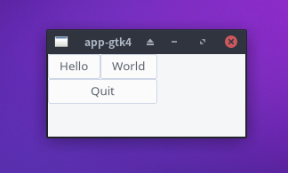

用ChezScheme和GTK4
构建跨平台软件
构建图形界面和命令行界面软件
所有代码均使用ChezScheme编写
将代码编译成一个二进制文件
为所有发行版构建安装包
支持 Linux BSD Windows

这个简单的HelloWorld软件是由Minipaca构建的。它在EndeavourOS上使用大约180MB内存，运行得非常快。
第1步： 安装 Minipaca
第2步： 创建源文件
$ minipaca -x app-gtk4$ cd app-gtk4
第3步： 编译
$ minipaca -g
第4步： 打包
$ minipaca -p
HelloWorld 软件的安装包在目录 p 中。